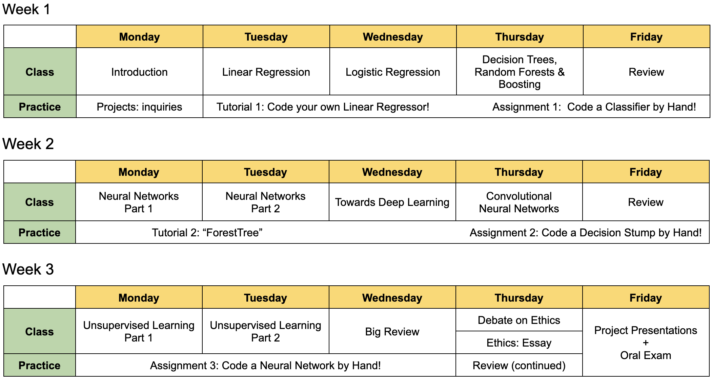

Instructor & Schedule
Contents
Instructor & Schedule#
Claire David, PhD#
{kind=link}
I am an experimental particle physicist, and as such I study the Universe through its tiniest, most fundamental constituents: the elementary particles.
I was initially trained as an engineer at the Institut National des Sciences Appliquées (INSA) in Toulouse, France.
I switched to fundamental science with a PhD in Particle Physics at the University of Victoria in Canada. I was based at TRIUMF in Vancouver and was stationned from 2012 until mid-2013 at CERN between Switzerland and France.
After a postdoctoral fellowship at DESY in Hamburg, Germany, I started as Assistant Professor at York University, north of Toronto, Canada. There I co-founded the Canadian effort on the Deep Underground Neutrino Experiment (DUNE), which is a future detector to be hosted by the US laboratory Fermilab near Chicago, Illinois.
My main area of research is in collider physics. I have 10+ years’ experience working for the ATLAS Experiment, which is one of the detectors of the Large Hadron Collider (LHC) at CERN, on both data analysis and detector upgrade.
During the academic year 2022-2023, I took a leave from York University to build a course on machine learning designed for the African Institute for Mathematical Sciences (AIMS) format. I taught this course at AIMS Senegal, AIMS South Africa and AIMS Ghana. During my stay at AIMS South Africa, I was offered the opportunity to become a Resident Researcher in Machine Learning and the Program & Researcher Manager of a new Master’s course AI For Science, founded by Google DeepMind.
My interests range from advanced machine learning implementations for experimental particle physics to ethics in A.I., education in Africa and sustainability on this fragile planet.
Schedule#
The table below shows a tentative weekly schedule for this course. There may be adjustements and as you can see there is time dedicated for reviews. The tutorials will run mostly during evening sessions so that you can learn at your own pace.
{kind=link}

Acknowledgments#
I have received the precious help of colleagues and friends. A big thank you to Harrison Prosper for being a great mentor and sharing valuable resources. I would also like to thank Alex Held, Benjamin Nachman, Bruno Barton-Singer, Clara Nellist, Dag Gillberg, Matthew Feickert, Sascha Caron and Will Leight.
For this course I got inspired by Coursera’s Introduction to Machine Learning, by Andrew Ng. I found wonderful tutorials in Machine Learning Mastery, by Dr. Jason Brownlee. Aurélien Géron’s book Hands-on Machine Learning with Scikit-Learn, Keras, and TensorFlow (Second Edition) is fabulous. I am grateful to all ‘StackOverflowers’ helping me debug some parts of code to shape the tutorials and assignments into, I hope, an awesome learning experience for the students.